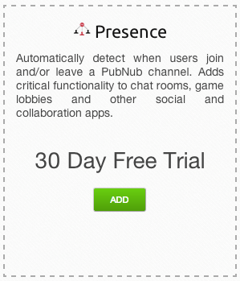
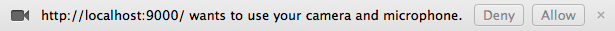

Building video calling apps is no small task. Learning about video codecs, signaling, and presence is just the beginning when it comes to implementation. At PubNub, we have partnered our technology with WebRTC to make integration fast and easy to build video chat software. Out of the box our WebRTC Framework will power audio, video, and data communication between two browsers.
WebRTC Video App Demo from PubNub Video on Vimeo.
The first step to building your own video calling app is to install both PubNub and our WebRTC SDK. To install both of these, first download the WebRTC SDK to your local project somewhere. Then include both libraries:
<script src=”http://cdn.pubnub.com/pubnub.min.js”></script> <script src=”/path/to/webrtc-beta-pubnub.*.*.*.js”></script>
Also, if you have not already, visit PubNub to sign up for a free account and learn how to initialize your pubnub JavaScript interface
The PubNub library comes with the functionality to see what users come online and offline. To start, enable this functionality by visiting admin.pubnub.com and enabling “presence” on your API key. This will allow your clients to start receiving join and leave events.
In our application, every user is subscribed to one channel. This means every user can see all the other users that are currently connected. This is done easily by using a channel named “phonebook”:
pubnub.subscribe({
channel: ‘phonebook’,
callback: function (message) {
// Do nothing in our callback
},
presence: function (data) {
if (data.action === “join” && data.uuid != myUuid) {
var parts = data.uuid.split(‘-’);
var newUser = newUserTemplate({
name: parts[1]
id: parts[0]
});
userList.append(newUser);
} else if (data.action === “leave” and data.uuid != myUuid) {
var parts = data.uuid.split(‘-’);
var item = userList.find(“li[data-user=\”” + parts[0] + “\”]”);
item.remove();
}
}
});
Currently the user data is stored in the data- attributes of the element itself. This makes it easy to work with as a prototype but could be extended to an AngularJS scope or Backbone Collection easily.
The first step in any WebRTC application is to get the stream from the user’s webcam. Luckily, the browser provides an easy to use way of getting this stream. The code for doing this uses the getUserMedia API:
function gotStream(stream) {
document.querySelector(‘#self-call-video’).src = URL.createObjectURL(stream);
myStream = stream; // Save the stream for later use
};
navigator.webkitGetUserMedia({ audio: true, video: true}, gotStream);
Note here that the stream is stored for use in publishing to a WebRTC peer connection. When you make this call the user will have to allow your application to use the webcam. The callback will not be called until this has been done, so it may be good to notify the user that they need to allow this before moving on.
Once your application has the user stream you can now publish that stream to another user. Since the RTCPeerConnection requires you to publish your stream before the connection is made, the library provides methods for both subscribing and listen for new connections. The code below will take care of both cases and allow a completed call to be made:
function publishStream(uuid) {
pubnub.publish({
user: uuid,
stream: myStream
});
pubnub.subscribe({
user: uuid,
stream: function (data, event) {
document.querySelector(‘#call-video’).src = URL.createObjectUrl(event.stream);
},
disconnect: function (uuid, pc) {
document.querySelector(“#call-video”).src = “”;
$(document).trigger(“call:end”);
}
});
};
pubnub.onNewConnection(function (uuid) {
if (myStream != null) {
publishStream(uuid);
}
});
pubnub.subscribe({
channel: ‘answer’,
callback: function (data) {
if (data.caller == myUuid) {
publishStream(data.callee);
}
}
});
This will take care of all the use cases when calling another user:
Hanging up the call is as simple as closing the peer connection. The other user tries to reconnect for a few seconds and then recognizes the call is dropped after that. The library provides an interface for both cases:
function hangUp() {
pubnub.closeConnection(currentCall, function () {
$(document).trigger(“call:end”);
}
};
pubnub.subscribe({
// ... Other subscribe code here
disconnect: function (uuid, peerConnection) {
hangUp();
// React to the disconnect
}
});
Our demo also allows you to login with any Google+ account. Since our users are identified by a unique user ID, this ID can be anything the developers provides. In this use case, we provide the unique user ID provided by the Google+ API.
Unfortunately this just gives us an ID for each user, so if we want to tell the user who is currently available for chat they will just see the numerical representation of each user. The way we get around this limitation is by including the user name in each unique user ID. Our user names now look like “1234567-John Doe”. Now we can call String.split(‘-’) to get the name and the ID separated so we can show the human readable form to the user.
Now we can take this seemingly complex application and simplify the time to develop this so even one person can build it. The most amazing thing about this is that it is scalable from the beginning. Using the PubNub network allows your application to scale on a global level. The RTCPeerConnection also abstracts away much of the complexity that deals with codecs and setting up a peer connection. We at PubNub hope to see a whole new wave of communication applications on the web! Check out the demo of our video calling application here [link].
Today’s users expect to interact in real-time. PubNub makes it easy for you to add real-time capabilities to your apps, without worrying about the infrastructure. Build apps that allow your users to engage in real-time across mobile, browser, desktop and server.
The PubNub Real-Time Network takes care of the connections, global infrastructure and key building blocks for real-time interactivity, so you can focus creating killer apps…